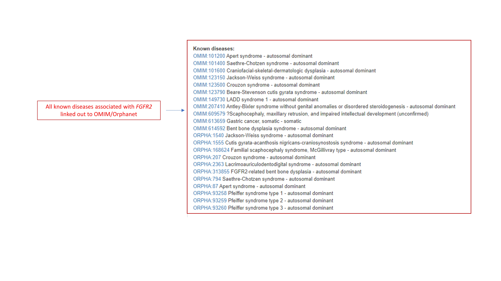
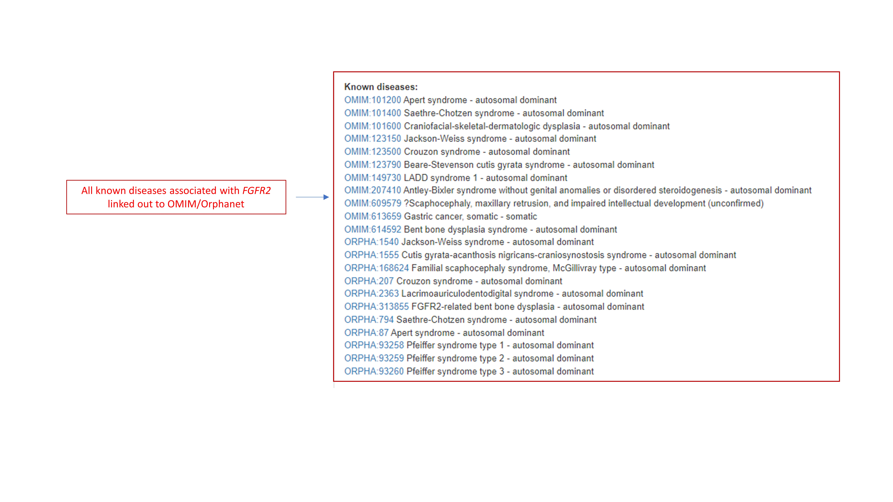
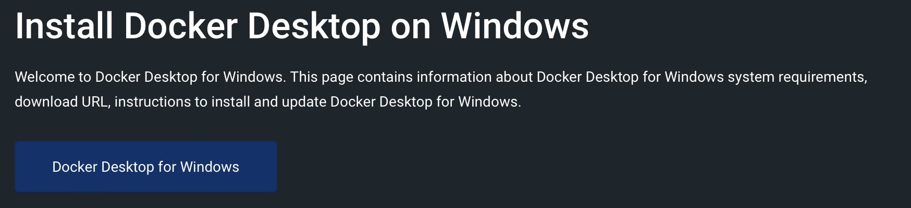

Introduction to Exomiser
Tutorial: an introduction to Exomiser¶
Exomiser is a Java program that ranks potential rare Mendelian disease-causing variants from whole-exome or whole-genome sequencing data. Starting from a patient's VCF file and a set of phenotypes encoded using the Human Phenotype Ontology (HPO), it will annotate, filter and prioritise likely causative variants. The program does this based on user-defined criteria such as a variant's predicted pathogenicity, frequency of occurrence in a population and also how closely the given patient's phenotype matches any known phenotype of genes from human disease and model organism data.
In this tutorial, we will learn how to install and run Exomiser with Docker, and how to interpret the results in various output formats detailing the predicted causative genes and variants. If you prefer to work locally, instructions are also provided below for Windows and Linux/Mac users.
The complete Exomiser documentation can be found here, including some relevant references here, and the Exomiser GitHub repository here.
Please note that this tutorial is up-to-date with the current latest release 13.2.0 and data version up to 2302 (Feb 2023).
PREREQUISITES¶
You know:
- how to use a command line interface.
You have:
-
Docker installed and running on your machine. Check out this simple guide to set up Docker for Windows or Docker for Mac.
-
We recommend to have Exomiser installed via Docker prior to the tutorial. Open a terminal and run the command below:
- Exomiser-Tutorial files downloaded from our GoogleDrive.
Alternatively:
# download the data via
wget https://github.com/iQuxLE/Exomiser-Tutorial/raw/main/Exomiser-Tutorial.zip
# OR clone the repository
git clone https://github.com/iQuxLE/Exomiser-Tutorial.git
# unzip
unzip Exomiser-Tutorial.zip
Exomiser-Tutorial folder.
# download
wget https://github.com/iQuxLE/Exomiser-Tutorial/raw/main/pfeiffer-family-vcf.zip
# unzip
unzip pfeiffer-family-vcf.zip -d Exomiser-Tutorial/exomiser-config/
The Exomiser-Tutorial folder contains a directory called exomiser-config (with all the VCF and analysis files)
and exomiser-overview (with some introductory slides).
- Importantly, we highly recommend downloading the Exomiser data prior to the tutorial in order to follow along. The data required to run Exomiser is ~80GB and will take a while to download and unpack (depending on your internet connection, it may take a few hours). For this tutorial, you only need to download the Exomiser phenotype data and the variant data for the hg19 assembly. If you have your own samples to run with Exomiser and the VCF files are built on the hg38 build, then you will need to download the hg38 variant data as well. The current data version that we will use in this tutorial is 2302 (Feb 2023). This will change in the future. Always make sure that you use the latest data version available. To download the Exomiser data from the terminal:
# create an empty directory for exomiser-data within the Exomiser-Tutorial folder:
cd /path/to/Exomiser-Tutorial/
mkdir exomiser-data
cd exomiser-data
# download the data
wget https://data.monarchinitiative.org/exomiser/latest/2302_phenotype.zip # for the phenotype database
wget https://data.monarchinitiative.org/exomiser/latest/2302_hg19.zip # for the hg19 variant database
# unzip the data
unzip "2302_*.zip"
Otherwise, visit the links and download the data in your own exomiser-data directory:
Install 7-Zip for unzipping the database files. The built-in archiving software has issues extracting the zip files. Extract the database files (2302_phenotype.zip, 2302_hg19.zip) by right-clicking the archive and selecting 7-Zip > Extract files into the exomiser-data directory.
Your Exomiser-Tutorial directory should now be structured as follows:
Exomiser-Tutorial
exomiser-config
exomiser-data
2302_hg19
2302_phenotype
exomiser-overview
exomiser-tutorial-slides
Outline of the tutorial¶
Exomiser overview¶
For a quick overview of Exomiser take a look at the slides located in the Google Drive or GitHub repo.
Exomiser installation¶
via Docker¶
(recommended to be installed prior to the tutorial; if you run the command below again, you should receive the message "Image is up to date for exomiser/exomiser-cli:13.2.0")
via Windows¶
- Install 7-Zip for unzipping the archive files. The built-in archiving software has issues extracting the zip files.
- Download the
exomiser-cli-13.2.0-distribution.zipdistribution from Monarch. - Download the variant
2302_hg19.zipand phenotype2302_phenotype.zipdata files from Monarch. - Extract the distribution files by right-clicking
exomiser-cli-13.2.0-distribution.zipand selecting 7-Zip > Extract Here - Extract the data files (e.g.
2302_phenotype.zip,2302_hg19.zip) by right-clicking the archive and selecting 7-Zip > Extract files into the exomiser data directory. By default, Exomiser expects this to be exomiser-cli-13.2.0/data, but this can be changed in the application.properties.
via Linux/Mac¶
The following shell script should work:
# download the distribution (won't take long)
wget https://data.monarchinitiative.org/exomiser/latest/exomiser-cli-13.2.0-distribution.zip
# download the data (this is ~80GB and will take a while). If you only require a single assembly, only download the relevant files.
wget https://data.monarchinitiative.org/exomiser/latest/2302_hg19.zip
wget https://data.monarchinitiative.org/exomiser/latest/2302_phenotype.zip
# unzip the distribution and data files - this will create a directory called 'exomiser-cli-13.2.0' in the current working directory (with examples and application.properties)
unzip exomiser-cli-13.2.0-distribution.zip
unzip '2302_*.zip' -d exomiser-cli-13.2.0/data
Configuring the application.properties¶
The application.properties file needs to be updated to point to the correct location of the Exomiser data. For the purpose of this tutorial, this is already sorted, pointing to the mounted directory inside the Docker container exomiser.data-directory=/exomiser-data.
Also, you want to make sure to edit the file to use the correct data version (currently 2302):
Tutorials¶
Monarch OBO Training Tutorial¶
Running Exomiser¶
For this tutorial, we will focus on running Exomiser on a single-sample (whole-exome) VCF file. Additional instructions for running Exomiser on multi-sample VCF data and large jobs are also provided below.
Using phenopackets¶
It is recommended to provide Exomiser with the input sample as a Phenopacket. Exomiser will accept this in either JSON
or YAML format. We will use the example pfeiffer-phenopacket.yml below:
id: manuel
subject:
id: manuel
sex: MALE
phenotypicFeatures:
- type:
id: HP:0001159
label: Syndactyly
- type:
id: HP:0000486
label: Strabismus
- type:
id: HP:0000327
label: Hypoplasia of the maxilla
- type:
id: HP:0000520
label: Proptosis
- type:
id: HP:0000316
label: Hypertelorism
- type:
id: HP:0000244
label: Brachyturricephaly
htsFiles:
- uri: exomiser/Pfeiffer.vcf.gz
htsFormat: VCF
genomeAssembly: hg19
metaData:
created: '2019-11-12T13:47:51.948Z'
createdBy: julesj
resources:
- id: hp
name: human phenotype ontology
url: http://purl.obolibrary.org/obo/hp.owl
version: hp/releases/2019-11-08
namespacePrefix: HP
iriPrefix: 'http://purl.obolibrary.org/obo/HP_'
phenopacketSchemaVersion: 1.0
NOTE: This is an example of a v1.0 phenopacket, there is a more recent release of v2.0. Exomiser can run phenopackets built with either v1.0 or v2.0 schema. You can find out more about the v2.0 phenopacket schema and how to build one with Python or Java here. To convert a phenopacket v1.0 to v2.0, you can use phenopacket-tools.
Analysis settings¶
Below are the default analysis settings from pfeiffer-analysis.yml that we will use in our tutorial:
---
analysis:
#FULL or PASS_ONLY
analysisMode: PASS_ONLY
# In cases where you do not want any cut-offs applied an empty map should be used e.g. inheritanceModes: {}
# These are the default settings, with values representing the maximum minor allele frequency in percent (%) permitted for an
# allele to be considered as a causative candidate under that mode of inheritance.
# If you just want to analyse a sample under a single inheritance mode, delete/comment-out the others. For AUTOSOMAL_RECESSIVE
# or X_RECESSIVE ensure *both* relevant HOM_ALT and COMP_HET modes are present.
inheritanceModes: {
AUTOSOMAL_DOMINANT: 0.1,
AUTOSOMAL_RECESSIVE_COMP_HET: 2.0,
AUTOSOMAL_RECESSIVE_HOM_ALT: 0.1,
X_DOMINANT: 0.1,
X_RECESSIVE_COMP_HET: 2.0,
X_RECESSIVE_HOM_ALT: 0.1,
MITOCHONDRIAL: 0.2
}
#Possible frequencySources:
#Thousand Genomes project http://www.1000genomes.org/
# THOUSAND_GENOMES,
#ESP project http://evs.gs.washington.edu/EVS/
# ESP_AFRICAN_AMERICAN, ESP_EUROPEAN_AMERICAN, ESP_ALL,
#ExAC project http://exac.broadinstitute.org/about
# EXAC_AFRICAN_INC_AFRICAN_AMERICAN, EXAC_AMERICAN,
# EXAC_SOUTH_ASIAN, EXAC_EAST_ASIAN,
# EXAC_FINNISH, EXAC_NON_FINNISH_EUROPEAN,
# EXAC_OTHER
#Possible frequencySources:
#Thousand Genomes project - http://www.1000genomes.org/ (THOUSAND_GENOMES)
#TOPMed - https://www.nhlbi.nih.gov/science/precision-medicine-activities (TOPMED)
#UK10K - http://www.uk10k.org/ (UK10K)
#ESP project - http://evs.gs.washington.edu/EVS/ (ESP_)
# ESP_AFRICAN_AMERICAN, ESP_EUROPEAN_AMERICAN, ESP_ALL,
#ExAC project http://exac.broadinstitute.org/about (EXAC_)
# EXAC_AFRICAN_INC_AFRICAN_AMERICAN, EXAC_AMERICAN,
# EXAC_SOUTH_ASIAN, EXAC_EAST_ASIAN,
# EXAC_FINNISH, EXAC_NON_FINNISH_EUROPEAN,
# EXAC_OTHER
#gnomAD - http://gnomad.broadinstitute.org/ (GNOMAD_E, GNOMAD_G)
frequencySources: [
THOUSAND_GENOMES,
TOPMED,
UK10K,
ESP_AFRICAN_AMERICAN, ESP_EUROPEAN_AMERICAN, ESP_ALL,
EXAC_AFRICAN_INC_AFRICAN_AMERICAN, EXAC_AMERICAN,
EXAC_SOUTH_ASIAN, EXAC_EAST_ASIAN,
EXAC_FINNISH, EXAC_NON_FINNISH_EUROPEAN,
EXAC_OTHER,
GNOMAD_E_AFR,
GNOMAD_E_AMR,
# GNOMAD_E_ASJ,
GNOMAD_E_EAS,
GNOMAD_E_FIN,
GNOMAD_E_NFE,
GNOMAD_E_OTH,
GNOMAD_E_SAS,
GNOMAD_G_AFR,
GNOMAD_G_AMR,
# GNOMAD_G_ASJ,
GNOMAD_G_EAS,
GNOMAD_G_FIN,
GNOMAD_G_NFE,
GNOMAD_G_OTH,
GNOMAD_G_SAS
]
# Possible pathogenicitySources: (POLYPHEN, MUTATION_TASTER, SIFT), (REVEL, MVP), CADD, REMM
# REMM is trained on non-coding regulatory regions
# *WARNING* if you enable CADD or REMM ensure that you have downloaded and installed the CADD/REMM tabix files
# and updated their location in the application.properties. Exomiser will not run without this.
pathogenicitySources: [ REVEL, MVP ]
#this is the standard exomiser order.
#all steps are optional
steps: [
#hiPhivePrioritiser: {},
#priorityScoreFilter: {priorityType: HIPHIVE_PRIORITY, minPriorityScore: 0.500},
#intervalFilter: {interval: 'chr10:123256200-123256300'},
# or for multiple intervals:
#intervalFilter: {intervals: ['chr10:123256200-123256300', 'chr10:123256290-123256350']},
# or using a BED file - NOTE this should be 0-based, Exomiser otherwise uses 1-based coordinates in line with VCF
#intervalFilter: {bed: /full/path/to/bed_file.bed},
#genePanelFilter: {geneSymbols: ['FGFR1','FGFR2']},
failedVariantFilter: { },
#qualityFilter: {minQuality: 50.0},
variantEffectFilter: {
remove: [
FIVE_PRIME_UTR_EXON_VARIANT,
FIVE_PRIME_UTR_INTRON_VARIANT,
THREE_PRIME_UTR_EXON_VARIANT,
THREE_PRIME_UTR_INTRON_VARIANT,
NON_CODING_TRANSCRIPT_EXON_VARIANT,
UPSTREAM_GENE_VARIANT,
INTERGENIC_VARIANT,
REGULATORY_REGION_VARIANT,
CODING_TRANSCRIPT_INTRON_VARIANT,
NON_CODING_TRANSCRIPT_INTRON_VARIANT,
DOWNSTREAM_GENE_VARIANT
]
},
# removes variants represented in the database
#knownVariantFilter: {},
frequencyFilter: {maxFrequency: 2.0},
pathogenicityFilter: {keepNonPathogenic: true},
# inheritanceFilter and omimPrioritiser should always run AFTER all other filters have completed
inheritanceFilter: {},
# omimPrioritiser isn't mandatory.
omimPrioritiser: {},
#priorityScoreFilter: {minPriorityScore: 0.4},
# Other prioritisers: Only combine omimPrioritiser with one of these.
# Don't include any if you only want to filter the variants.
hiPhivePrioritiser: {},
# or run hiPhive in benchmarking mode:
#hiPhivePrioritiser: {runParams: 'mouse'},
#phivePrioritiser: {}
#phenixPrioritiser: {}
#exomeWalkerPrioritiser: {seedGeneIds: [11111, 22222, 33333]}
]
outputOptions:
outputContributingVariantsOnly: false
#numGenes options: 0 = all or specify a limit e.g. 500 for the first 500 results
numGenes: 0
#minExomiserGeneScore: 0.7
# Path to the desired output directory. Will default to the 'results' subdirectory of the exomiser install directory
outputDirectory: results
# Filename for the output files. Will default to {input-vcf-filename}-exomiser
outputFileName: Pfeiffer-HIPHIVE-exome
#out-format options: HTML, JSON, TSV_GENE, TSV_VARIANT, VCF (default: HTML)
outputFormats: [HTML, JSON, TSV_GENE, TSV_VARIANT]
Running via Docker¶
docker run -it -v "/path/to/Exomiser-Tutorial/exomiser-data:/exomiser-data" \
-v "/path/to/Exomiser-Tutorial/exomiser-config/:/exomiser" \
-v "/path/to/Exomiser-Tutorial/exomiser-results:/results" \
exomiser/exomiser-cli:13.2.0 \
--sample /exomiser/pfeiffer-phenopacket.yml \
--analysis /exomiser/pfeiffer-analysis.yml \
--spring.config.location=/exomiser/application.properties
This command will produce Pfeiffer-HIPHIVE-exome.html, Pfeiffer-HIPHIVE-exome.json, Pfeiffer-HIPHIVE-exome.genes.tsv and Pfeiffer-HIPHIVE-exome.variants.tsv in your exomiser-results directory.
Running locally¶
Assuming that you are within the exomiser-cli-13.2.0 distribution folder:
java -jar exomiser-cli-13.2.0.jar --sample examples/pfeiffer-phenopacket.yml \
--analysis examples/exome-analysis.yml --output examples/output-options.yml
Analysing multi-sample VCF files¶
When analysing a multi-sample VCF file, you must detail the pedigree information in a phenopacket describing a Family object:
e.g. Exomiser-Tutorial/exomiser-config/pfeiffer-family.yml
id: ISDBM322017-family
proband:
subject:
id: ISDBM322017
sex: FEMALE
phenotypicFeatures:
- type:
id: HP:0001159
label: Syndactyly
- type:
id: HP:0000486
label: Strabismus
- type:
id: HP:0000327
label: Hypoplasia of the maxilla
- type:
id: HP:0000520
label: Proptosis
- type:
id: HP:0000316
label: Hypertelorism
- type:
id: HP:0000244
label: Brachyturricephaly
pedigree:
persons:
- individualId: ISDBM322017
paternalId: ISDBM322016
maternalId: ISDBM322018
sex: FEMALE
affectedStatus: AFFECTED
- individualId: ISDBM322015
paternalId: ISDBM322016
maternalId: ISDBM322018
sex: MALE
affectedStatus: UNAFFECTED
- individualId: ISDBM322016
sex: MALE
affectedStatus: UNAFFECTED
- individualId: ISDBM322018
sex: FEMALE
affectedStatus: UNAFFECTED
htsFiles:
- uri: exomiser/Pfeiffer-quartet.vcf.gz
htsFormat: VCF
genomeAssembly: GRCh37
metaData:
created: '2019-11-12T13:47:51.948Z'
createdBy: julesj
resources:
- id: hp
name: human phenotype ontology
url: http://purl.obolibrary.org/obo/hp.owl
version: hp/releases/2019-11-08
namespacePrefix: HP
iriPrefix: 'http://purl.obolibrary.org/obo/HP_'
phenopacketSchemaVersion: 1.0
Running via Docker:
docker run -it -v '/path/to/Exomiser-Tutorial/exomiser-data:/exomiser-data' \
-v '/path/to/Exomiser-Tutorial/exomiser-config/:/exomiser' \
-v '/path/to/Exomiser-Tutorial/exomiser-results:/results' \
exomiser/exomiser-cli:13.2.0 \
--sample /exomiser/pfeiffer-family.yml \
--analysis /exomiser/pfeiffer-analysis.yml \
--spring.config.location=/exomiser/application.properties
Running locally:
Assuming that you are within the exomiser-cli-13.2.0 distribution folder
java -jar exomiser-cli-13.2.0.jar --sample examples/pfeiffer-family.yml --analysis examples/exome-analysis.yml --output examples/output-options.yml
Running large jobs (batch)¶
The above commands can be added to a batch file for example in the
file Exomiser-Tutorial/exomiser-config/test-analysis-batch-commands.txt. Using it with Docker we recommend creating a
new directory for the batch files and mounting that to the Docker container.
Running via Docker:
docker run -it -v '/path/to/Exomiser-Tutorial/exomiser-data:/exomiser-data' \
-v '/path/to/Exomiser-Tutorial/exomiser-config/:/exomiser' \
-v '/path/to/Exomiser-Tutorial/exomiser-results:/results' \
-v '/path/to/Exomiser-Tutorial/exomiser-batch-files:/batch-files' \
exomiser/exomiser-cli:13.2.0 \
--batch /batch-files/test-analysis-batch-commands.txt
--spring.config.location=/exomiser/application.properties
Running locally:
Assuming that you are within the exomiser-cli-13.2.0 distribution folder
The advantage of this is that a single command will be able to analyse many samples in far less time than starting a new JVM for each as there will be no start-up penalty after the initial start and the Java JIT compiler will be able to take advantage of a longer-running process to optimise the runtime code. For maximum throughput on a cluster consider splitting your batch jobs over multiple nodes.
Results¶
Depending on the output options provided, Exomiser will write out at least an HTML and JSON output file in the results subdirectory of the Exomiser installation (by default) or a user-defined results directory as indicated in the output options.
As a general rule, all output files contain a ranked list of genes and variants with the top-ranked gene/variant displayed first. The exception being the VCF output (if requested in the output options; not requested in this tutorial) which, since version 13.1.0, is sorted according to VCF convention and tabix indexed.
In our tutorial, we requested HTML, JSON, TSV_VARIANT and TSV_GENE output formats which are briefly outlined below.
HTML¶
A few relevant screenshots from Pfeiffer-HIPHIVE-exome.html:
 


JSON¶
The JSON file represents the most accurate representation of the results, as it is referenced internally by Exomiser. As such, we dont provide a schema for this, but it has been pretty stable and breaking changes will only occur with major version changes to the software. Minor additions are to be expected for minor releases, as per the SemVer specification.
We recommend using Python or JQ to extract data from this file. To give you an idea of how you can extract some data with Python, we have provided examples of how you can iterate over the results below. However, there is a lot more information content that you can pull out from the JSON results file, this only provides a snippet of what you can do.
# import json library
import json
# to load in the exomiser json result
with open("path/to/Exomiser-Tutorial/Pfeiffer-HIPHIVE-exome.json") as exomiser_json_result:
exomiser_result = json.load(exomiser_json_result)
exomiser_json_result.close()
# to retrieve all predicted genes and corresponding identifier (ENSEMBL)
gene_results = []
for result in exomiser_result:
gene_results.append({result["geneSymbol"]: result["geneIdentifier"]["geneId"]})
# to retrieve all predicted variants
variant_results = []
for result in exomiser_result:
for moi in result["geneScores"]: # iterating over all modes of inheritance
if "contributingVariants" in moi: # checking if there is evidence of contributing variants
for cv in moi["contributingVariants"]: # iterating over all contributing variants
variant_results.append({"chromosome": cv["contigName"],
"start_pos": cv["start"],
"end_pos": cv["end"],
"ref_allele": cv["ref"],
"alt_allele": cv["alt"]})
TSV VARIANTS¶
In the Pfeiffer-HIPHIVE-exome.variants.tsv file it is possible for a variant to appear multiple times, depending on the MOI it is compatible with. For example, in the excerpt of the file below, MUC6 has two variants ranked 7th under the AD model and two ranked 8th under an AR (compound heterozygous) model. In the AD case the CONTRIBUTING_VARIANT column indicates whether the variant was (1) or wasn't (0) used for calculating the EXOMISER_GENE_COMBINED_SCORE and EXOMISER_GENE_VARIANT_SCORE.
#RANK ID GENE_SYMBOL ENTREZ_GENE_ID MOI P-VALUE EXOMISER_GENE_COMBINED_SCORE EXOMISER_GENE_PHENO_SCORE EXOMISER_GENE_VARIANT_SCORE EXOMISER_VARIANT_SCORE CONTRIBUTING_VARIANT WHITELIST_VARIANT VCF_ID RS_ID CONTIG START END REF ALT CHANGE_LENGTH QUAL FILTER GENOTYPE FUNCTIONAL_CLASS HGVS EXOMISER_ACMG_CLASSIFICATION EXOMISER_ACMG_EVIDENCE EXOMISER_ACMG_DISEASE_ID EXOMISER_ACMG_DISEASE_NAME CLINVAR_ALLELE_ID CLINVAR_PRIMARY_INTERPRETATION CLINVAR_STAR_RATING GENE_CONSTRAINT_LOEUF GENE_CONSTRAINT_LOEUF_LOWER GENE_CONSTRAINT_LOEUF_UPPER MAX_FREQ_SOURCE MAX_FREQ ALL_FREQ MAX_PATH_SOURCE MAX_PATH ALL_PATH
1 10-123256215-T-G_AD FGFR2 2263 AD 0.0000 0.9957 0.9187 1.0000 1.0000 1 1 rs121918506 10 123256215 123256215 T G 0 900.0000 PASS 0/1 missense_variant FGFR2:ENST00000346997.2:c.1688A>C:p.(Glu563Ala) PATHOGENIC PM2,PP3_Strong,PP4,PP5_Strong ORPHA:87 Apert syndrome 28333 PATHOGENIC_OR_LIKELY_PATHOGENIC 2 0.13692 0.074 0.27 REVEL 0.965 REVEL=0.965,MVP=0.9517972
2 5-71755984-C-G_AD ZNF366 167465 AD 0.0018 0.9237 0.8195 0.7910 0.7910 1 0 rs375204168 5 71755984 71755984 C G 0 380.8900 PASS 0/1 splice_region_variant ZNF366:ENST00000318442.5:c.1332+8G>C:p.? UNCERTAIN_SIGNIFICANCE NOT_PROVIDED 0 0.27437 0.155 0.515 EXAC_AMERICAN 0.07975895 THOUSAND_GENOMES=0.01997,TOPMED=0.01096,ESP_EUROPEAN_AMERICAN=0.0116,ESP_ALL=0.0077,EXAC_AMERICAN=0.07975895,EXAC_NON_FINNISH_EUROPEAN=0.010914307,GNOMAD_E_AMR=0.07153929,GNOMAD_E_NFE=0.010890082,GNOMAD_E_OTH=0.018328445
3 16-2150254-G-A_AD PKD1 5310 AD 0.0050 0.8272 0.6597 0.8707 0.8707 1 0 rs147967021 16 2150254 2150254 G A 0 406.0800 PASS 0/1 missense_variant PKD1:ENST00000262304.4:c.9625C>T:p.(Arg3209Cys) UNCERTAIN_SIGNIFICANCE 1319391 UNCERTAIN_SIGNIFICANCE 1 0.12051 0.082 0.179 EXAC_AMERICAN 0.06979585 THOUSAND_GENOMES=0.01997,TOPMED=0.007934,EXAC_AMERICAN=0.06979585,EXAC_NON_FINNISH_EUROPEAN=0.0015655332,EXAC_SOUTH_ASIAN=0.012149192,GNOMAD_E_AFR=0.006708708,GNOMAD_E_AMR=0.05070389,GNOMAD_E_NFE=0.002718672,GNOMAD_E_SAS=0.013009822,GNOMAD_G_AFR=0.011462632 MVP 0.8792868 REVEL=0.346,MVP=0.8792868
4 3-56653839-CTG-C_AD CCDC66 285331 AD 0.0051 0.8262 0.5463 0.9984 0.9984 1 0 rs751329549 3 56653839 56653841 CTG C -2 1872.9400 PASS 0/1 frameshift_truncation CCDC66:ENST00000326595.7:c.2572_2573del:p.(Val858Glnfs*6) UNCERTAIN_SIGNIFICANCE NOT_PROVIDED 0 0.9703 0.78 1.215 GNOMAD_E_AMR 0.011914691 TOPMED=7.556E-4,EXAC_EAST_ASIAN=0.01155535,EXAC_NON_FINNISH_EUROPEAN=0.0015023135,GNOMAD_E_AMR=0.011914691,GNOMAD_E_EAS=0.0057977736,GNOMAD_E_NFE=8.988441E-4
5 13-110855918-C-G_AD COL4A1 1282 AD 0.0075 0.7762 0.5288 0.9838 0.9838 1 0 rs150182714 13 110855918 110855918 C G 0 1363.8700 PASS 0/1 missense_variant COL4A1:ENST00000375820.4:c.994G>C:p.(Gly332Arg) UNCERTAIN_SIGNIFICANCE PP3_Moderate OMIM:175780 Brain small vessel disease with or without ocular anomalies 333515 CONFLICTING_PATHOGENICITY_INTERPRETATIONS 1 0.065014 0.035 0.128 ESP_EUROPEAN_AMERICAN 0.0233 THOUSAND_GENOMES=0.01997,TOPMED=0.0068,ESP_EUROPEAN_AMERICAN=0.0233,ESP_ALL=0.0154,EXAC_AFRICAN_INC_AFRICAN_AMERICAN=0.009609841,EXAC_NON_FINNISH_EUROPEAN=0.007491759,GNOMAD_E_AFR=0.013068479,GNOMAD_E_NFE=0.0071611437,GNOMAD_G_NFE=0.013324451 MVP 0.9869305 REVEL=0.886,MVP=0.9869305
6 6-132203615-G-A_AD ENPP1 5167 AD 0.0079 0.7695 0.5112 0.9996 0.9996 1 0 rs770775549 6 132203615 132203615 G A 0 922.9800 PASS 0/1 splice_donor_variant ENPP1:ENST00000360971.2:c.2230+1G>A:p.? UNCERTAIN_SIGNIFICANCE PVS1_Strong NOT_PROVIDED 0 0.41042 0.292 0.586 GNOMAD_E_SAS 0.0032486517 TOPMED=7.556E-4,EXAC_NON_FINNISH_EUROPEAN=0.0014985314,GNOMAD_E_NFE=0.0017907989,GNOMAD_E_SAS=0.0032486517
7 11-1018088-TG-T_AD MUC6 4588 AD 0.0089 0.7563 0.5046 0.9990 0.9990 1 0 rs765231061 11 1018088 1018089 TG T -1 441.8100 PASS 0/1 frameshift_variant MUC6:ENST00000421673.2:c.4712del:p.(Pro1571Hisfs*21) UNCERTAIN_SIGNIFICANCE NOT_PROVIDED 0 0.79622 0.656 0.971 GNOMAD_G_NFE 0.0070363074 GNOMAD_E_AMR=0.0030803352,GNOMAD_G_NFE=0.0070363074
7 11-1018093-G-GT_AD MUC6 4588 AD 0.0089 0.7563 0.5046 0.9990 0.9989 0 0 rs376177791 11 1018093 1018093 G GT 1 592.4500 PASS 0/1 frameshift_elongation MUC6:ENST00000421673.2:c.4707dup:p.(Pro1570Thrfs*136) NOT_AVAILABLE NOT_PROVIDED 0 0.79622 0.656 0.971 GNOMAD_G_NFE 0.007835763 GNOMAD_G_NFE=0.007835763
8 11-1018088-TG-T_AR MUC6 4588 AR 0.0089 0.7562 0.5046 0.9990 0.9990 1 0 rs765231061 11 1018088 1018089 TG T -1 441.8100 PASS 0/1 frameshift_variant MUC6:ENST00000421673.2:c.4712del:p.(Pro1571Hisfs*21) UNCERTAIN_SIGNIFICANCE NOT_PROVIDED 0 0.79622 0.656 0.971 GNOMAD_G_NFE 0.0070363074 GNOMAD_E_AMR=0.0030803352,GNOMAD_G_NFE=0.0070363074
8 11-1018093-G-GT_AR MUC6 4588 AR 0.0089 0.7562 0.5046 0.9990 0.9989 1 0 rs376177791 11 1018093 1018093 G GT 1 592.4500 PASS 0/1 frameshift_elongation MUC6:ENST00000421673.2:c.4707dup:p.(Pro1570Thrfs*136) UNCERTAIN_SIGNIFICANCE NOT_PROVIDED 0 0.79622 0.656 0.971 GNOMAD_G_NFE 0.007835763 GNOMAD_G_NFE=0.007835763
9 7-44610376-G-A_AD DDX56 54606 AD 0.0091 0.7545 0.5036 0.9992 0.9992 1 0 rs774566321 7 44610376 44610376 G A 0 586.6600 PASS 0/1 stop_gained DDX56:ENST00000258772.5:c.991C>T:p.(Arg331*) UNCERTAIN_SIGNIFICANCE NOT_PROVIDED 0 0.56071 0.379 0.852 EXAC_SOUTH_ASIAN 0.006114712 EXAC_SOUTH_ASIAN=0.006114712,GNOMAD_E_SAS=0.0032509754
10 14-96730313-G-A_AD BDKRB1 623 AD 0.0093 0.7525 0.5018 1.0000 1.0000 1 0 14 96730313 96730313 G A 0 378.2200 PASS 0/1 stop_gained BDKRB1:ENST00000216629.6:c.294G>A:p.(Trp98*) UNCERTAIN_SIGNIFICANCE NOT_PROVIDED 0 0.52212 0.272 1.097
TSV GENES¶
In the Pfeiffer-HIPHIVE-exome.genes.tsv file, all the various phenotypic scores and HPO matches from the HUMAN, MOUSE, FISH and PPI comparisons are reported per each gene. It is possible for a gene to appear multiple times, depending on the MOI it is compatible with, given the filtered variants. For example in the example below MUC6 is ranked 7th under the AD model and 8th under an AR model.
#RANK ID GENE_SYMBOL ENTREZ_GENE_ID MOI P-VALUE EXOMISER_GENE_COMBINED_SCORE EXOMISER_GENE_PHENO_SCORE EXOMISER_GENE_VARIANT_SCORE HUMAN_PHENO_SCORE MOUSE_PHENO_SCORE FISH_PHENO_SCORE WALKER_SCORE PHIVE_ALL_SPECIES_SCORE OMIM_SCORE MATCHES_CANDIDATE_GENE HUMAN_PHENO_EVIDENCE MOUSE_PHENO_EVIDENCE FISH_PHENO_EVIDENCE HUMAN_PPI_EVIDENCE MOUSE_PPI_EVIDENCE FISH_PPI_EVIDENCE
1 FGFR2_AD FGFR2 2263 AD 0.0000 0.9957 0.9187 1.0000 0.8671 0.9187 0.0000 0.5057 0.9187 1.0000 0 Apert syndrome (ORPHA:87): Syndactyly (HP:0001159)-Toe syndactyly (HP:0001770), Strabismus (HP:0000486)-Strabismus (HP:0000486), Hypoplasia of the maxilla (HP:0000327)-Hypoplasia of the maxilla (HP:0000327), Proptosis (HP:0000520)-Proptosis (HP:0000520), Hypertelorism (HP:0000316)-Hypertelorism (HP:0000316), Brachyturricephaly (HP:0000244)-Brachyturricephaly (HP:0000244), Strabismus (HP:0000486)-ocular hypertelorism (MP:0001300), Hypoplasia of the maxilla (HP:0000327)-short maxilla (MP:0000097), Proptosis (HP:0000520)-exophthalmos (MP:0002750), Hypertelorism (HP:0000316)-ocular hypertelorism (MP:0001300), Brachyturricephaly (HP:0000244)-abnormal frontal bone morphology (MP:0000107), Proximity to FGF18 Syndactyly (HP:0001159)-abnormal metatarsal bone morphology (MP:0003072), Strabismus (HP:0000486)-abnormal neurocranium morphology (MP:0000074), Hypoplasia of the maxilla (HP:0000327)-maxilla hypoplasia (MP:0000457), Proptosis (HP:0000520)-abnormal neurocranium morphology (MP:0000074), Hypertelorism (HP:0000316)-abnormal neurocranium morphology (MP:0000074), Brachyturricephaly (HP:0000244)-abnormal neurocranium morphology (MP:0000074),
2 ZNF366_AD ZNF366 167465 AD 0.0018 0.9237 0.8195 0.7910 0.0000 0.8195 0.0000 0.5015 0.8195 1.0000 0 Syndactyly (HP:0001159)-syndactyly (MP:0000564), Strabismus (HP:0000486)-microphthalmia (MP:0001297), Hypoplasia of the maxilla (HP:0000327)-micrognathia (MP:0002639), Proptosis (HP:0000520)-microphthalmia (MP:0001297), Hypertelorism (HP:0000316)-microphthalmia (MP:0001297), Brachyturricephaly (HP:0000244)-microphthalmia (MP:0001297), Proximity to CTBP1 associated with Wolf-Hirschhorn syndrome (ORPHA:280): Syndactyly (HP:0001159)-Arachnodactyly (HP:0001166), Strabismus (HP:0000486)-Strabismus (HP:0000486), Hypoplasia of the maxilla (HP:0000327)-Micrognathia (HP:0000347), Proptosis (HP:0000520)-Proptosis (HP:0000520), Hypertelorism (HP:0000316)-Hypertelorism (HP:0000316), Brachyturricephaly (HP:0000244)-Calvarial skull defect (HP:0001362),
3 PKD1_AD PKD1 5310 AD 0.0050 0.8272 0.6597 0.8707 0.0000 0.6597 0.2697 0.5069 0.6597 1.0000 0 Strabismus (HP:0000486)-micrognathia (MP:0002639), Hypoplasia of the maxilla (HP:0000327)-micrognathia (MP:0002639), Proptosis (HP:0000520)-micrognathia (MP:0002639), Hypertelorism (HP:0000316)-micrognathia (MP:0002639), Brachyturricephaly (HP:0000244)-micrognathia (MP:0002639), Hypoplasia of the maxilla (HP:0000327)-mandibular arch skeleton malformed, abnormal (ZP:0001708), Proximity to IFT88 associated with Retinitis pigmentosa (ORPHA:791): Strabismus (HP:0000486)-Ophthalmoplegia (HP:0000602), Hypoplasia of the maxilla (HP:0000327)-Wide nasal bridge (HP:0000431), Proximity to IFT88 Syndactyly (HP:0001159)-polydactyly (MP:0000562), Strabismus (HP:0000486)-supernumerary molars (MP:0010773), Hypoplasia of the maxilla (HP:0000327)-supernumerary molars (MP:0010773), Proptosis (HP:0000520)-supernumerary molars (MP:0010773), Hypertelorism (HP:0000316)-supernumerary molars (MP:0010773), Brachyturricephaly (HP:0000244)-abnormal coronal suture morphology (MP:0003840),
4 CCDC66_AD CCDC66 285331 AD 0.0051 0.8262 0.5463 0.9984 0.0000 0.5463 0.0000 0.0000 0.5463 1.0000 0 Strabismus (HP:0000486)-abnormal cone electrophysiology (MP:0004022), Hypoplasia of the maxilla (HP:0000327)-abnormal rod electrophysiology (MP:0004021), Proptosis (HP:0000520)-abnormal rod electrophysiology (MP:0004021), Hypertelorism (HP:0000316)-abnormal rod electrophysiology (MP:0004021), Brachyturricephaly (HP:0000244)-abnormal retina photoreceptor layer morphology (MP:0003728),
5 COL4A1_AD COL4A1 1282 AD 0.0075 0.7762 0.5288 0.9838 0.3882 0.5288 0.0000 0.5047 0.5288 1.0000 0 Brain small vessel disease with or without ocular anomalies (OMIM:175780): Strabismus (HP:0000486)-Exotropia (HP:0000577), Strabismus (HP:0000486)-buphthalmos (MP:0009274), Hypoplasia of the maxilla (HP:0000327)-abnormal cornea morphology (MP:0001312), Proptosis (HP:0000520)-abnormal cornea morphology (MP:0001312), Hypertelorism (HP:0000316)-abnormal cornea morphology (MP:0001312), Brachyturricephaly (HP:0000244)-abnormal retina morphology (MP:0001325), Proximity to COL7A1 associated with Localized dystrophic epidermolysis bullosa, pretibial form (ORPHA:79410): Syndactyly (HP:0001159)-Nail dystrophy (HP:0008404), Hypoplasia of the maxilla (HP:0000327)-Carious teeth (HP:0000670), Proximity to COL7A1 Syndactyly (HP:0001159)-abnormal digit morphology (MP:0002110), Strabismus (HP:0000486)-abnormal tongue morphology (MP:0000762), Hypoplasia of the maxilla (HP:0000327)-abnormal tongue morphology (MP:0000762), Proptosis (HP:0000520)-abnormal tongue morphology (MP:0000762), Hypertelorism (HP:0000316)-abnormal tongue morphology (MP:0000762),
6 ENPP1_AD ENPP1 5167 AD 0.0079 0.7695 0.5112 0.9996 0.3738 0.5112 0.0000 0.5044 0.5112 1.0000 0 Autosomal recessive hypophosphatemic rickets (ORPHA:289176): Hypoplasia of the maxilla (HP:0000327)-Tooth abscess (HP:0030757), Brachyturricephaly (HP:0000244)-Craniosynostosis (HP:0001363), Syndactyly (HP:0001159)-abnormal elbow joint morphology (MP:0013945), Strabismus (HP:0000486)-abnormal retina morphology (MP:0001325), Hypoplasia of the maxilla (HP:0000327)-abnormal snout skin morphology (MP:0030533), Proptosis (HP:0000520)-abnormal retina morphology (MP:0001325), Hypertelorism (HP:0000316)-abnormal retina morphology (MP:0001325), Brachyturricephaly (HP:0000244)-abnormal retina morphology (MP:0001325), Proximity to DMP1 associated with Autosomal recessive hypophosphatemic rickets (ORPHA:289176): Hypoplasia of the maxilla (HP:0000327)-Tooth abscess (HP:0030757), Brachyturricephaly (HP:0000244)-Craniosynostosis (HP:0001363), Proximity to DMP1 Syndactyly (HP:0001159)-abnormal long bone hypertrophic chondrocyte zone (MP:0000165), Strabismus (HP:0000486)-abnormal dental pulp cavity morphology (MP:0002819), Hypoplasia of the maxilla (HP:0000327)-abnormal dental pulp cavity morphology (MP:0002819), Proptosis (HP:0000520)-abnormal dental pulp cavity morphology (MP:0002819), Hypertelorism (HP:0000316)-abnormal dental pulp cavity morphology (MP:0002819), Brachyturricephaly (HP:0000244)-abnormal dental pulp cavity morphology (MP:0002819),
7 MUC6_AD MUC6 4588 AD 0.0089 0.7563 0.5046 0.9990 0.0000 0.0000 0.0000 0.5046 0.5046 1.0000 0 Proximity to GALNT2 associated with Congenital disorder of glycosylation, type IIt (OMIM:618885): Syndactyly (HP:0001159)-Sandal gap (HP:0001852), Strabismus (HP:0000486)-Alternating exotropia (HP:0031717), Hypoplasia of the maxilla (HP:0000327)-Tented upper lip vermilion (HP:0010804), Proptosis (HP:0000520)-Hypertelorism (HP:0000316), Hypertelorism (HP:0000316)-Hypertelorism (HP:0000316), Brachyturricephaly (HP:0000244)-Brachycephaly (HP:0000248),
8 MUC6_AR MUC6 4588 AR 0.0089 0.7562 0.5046 0.9990 0.0000 0.0000 0.0000 0.5046 0.5046 1.0000 0 Proximity to GALNT2 associated with Congenital disorder of glycosylation, type IIt (OMIM:618885): Syndactyly (HP:0001159)-Sandal gap (HP:0001852), Strabismus (HP:0000486)-Alternating exotropia (HP:0031717), Hypoplasia of the maxilla (HP:0000327)-Tented upper lip vermilion (HP:0010804), Proptosis (HP:0000520)-Hypertelorism (HP:0000316), Hypertelorism (HP:0000316)-Hypertelorism (HP:0000316), Brachyturricephaly (HP:0000244)-Brachycephaly (HP:0000248),
9 DDX56_AD DDX56 54606 AD 0.0091 0.7545 0.5036 0.9992 0.0000 0.0000 0.3788 0.5036 0.5036 1.0000 0 Brachyturricephaly (HP:0000244)-head decreased width, abnormal (ZP:0000407), Proximity to PAK1IP1 Strabismus (HP:0000486)-abnormal maxilla morphology (MP:0000455), Hypoplasia of the maxilla (HP:0000327)-abnormal maxilla morphology (MP:0000455), Proptosis (HP:0000520)-abnormal maxilla morphology (MP:0000455), Hypertelorism (HP:0000316)-abnormal maxilla morphology (MP:0000455), Brachyturricephaly (HP:0000244)-decreased forebrain size (MP:0012138),
10 BDKRB1_AD BDKRB1 623 AD 0.0093 0.7525 0.5018 1.0000 0.0000 0.0000 0.0000 0.5018 0.5018 1.0000 0 Proximity to OPN4 Strabismus (HP:0000486)-abnormal visual pursuit (MP:0006156), Hypoplasia of the maxilla (HP:0000327)-abnormal visual pursuit (MP:0006156), Proptosis (HP:0000520)-abnormal visual pursuit (MP:0006156), Hypertelorism (HP:0000316)-abnormal visual pursuit (MP:0006156), Brachyturricephaly (HP:0000244)-abnormal retina ganglion cell morphology (MP:0008056),
Docker for Mac¶
Follow this link and download the Docker.dmg for your operating system.
The Docker.dmg will be found in your /Downloads directory.
After double-clicking on the Docker.dmg a new window will come up:

Drag and drop the Docker app into your /Applications folder.
Double-click on the Docker symbol.
Docker Desktop will start in the background, after you allow it to be opened.

Additionally, this window will come up to agree the Docker subscription service agreement.

After running the installation restart your terminal and check the Docker installation again from inside your terminal with:
If the output gives you a version and no error you are ready to go. If you have not already restarted your terminal do this now, and the error should be fixed.
In case you get an error message like this, please ensure you have downloaded the correct docker.dmg.

Now, whenever you want to pull images make sure that Docker is running in the background. Otherwise, you may get an error stating it's not able to connect to the Docker deamon.
Docker for Windows¶
Follow this link and download the Docker installer for Windows.
Inside your /Downloads directory, search for the Installer and double-click.

To run on Windows Docker requires a virtual machine. Docker recommends using WSL2. More information on this can be found here.

Click Ok and wait a bit.

Now you will have to restart your computer.

After restarting, Docker should start automatically and the Service Agreement will come up, which you will have to agree to use Docker:

If the Docker desktop app is showing this warning upon start, do not click Restart, yet. Instead, follow the link and install the kernel update.
The link should point you to an address with a separate download link.

Start and finish the installation for WSL.

If you still have the Docker Desktop dialog window open in the background, click on Restart. Otherwise, just restart your computer as you normally do.

If Docker Desktop did not start on its own, simply open it from the shortcut on your Desktop. You can do the initial orientation by clicking "Start".

After this, your Docker Desktop screen should look like this:
Now, whenever you want to pull images make sure that Docker is running in the background.